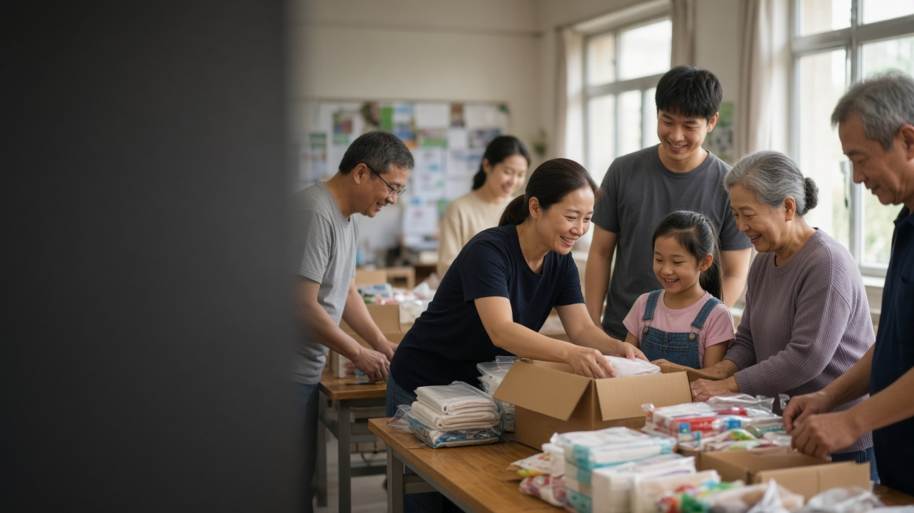
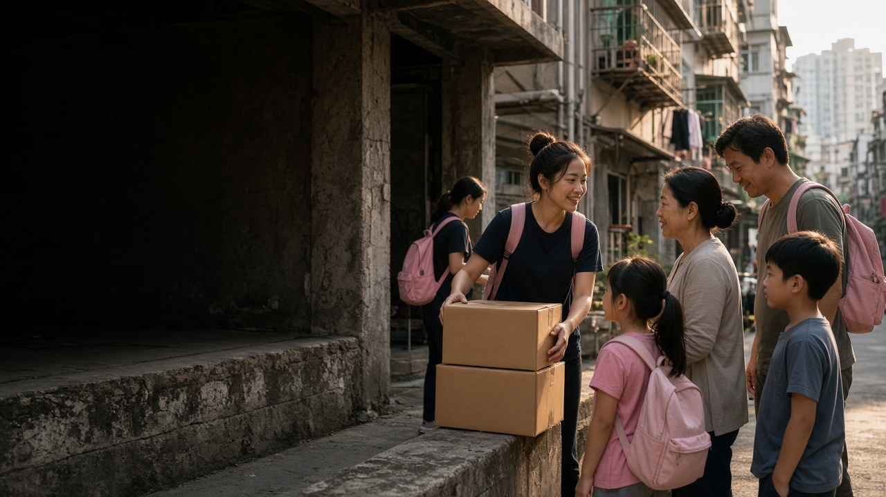
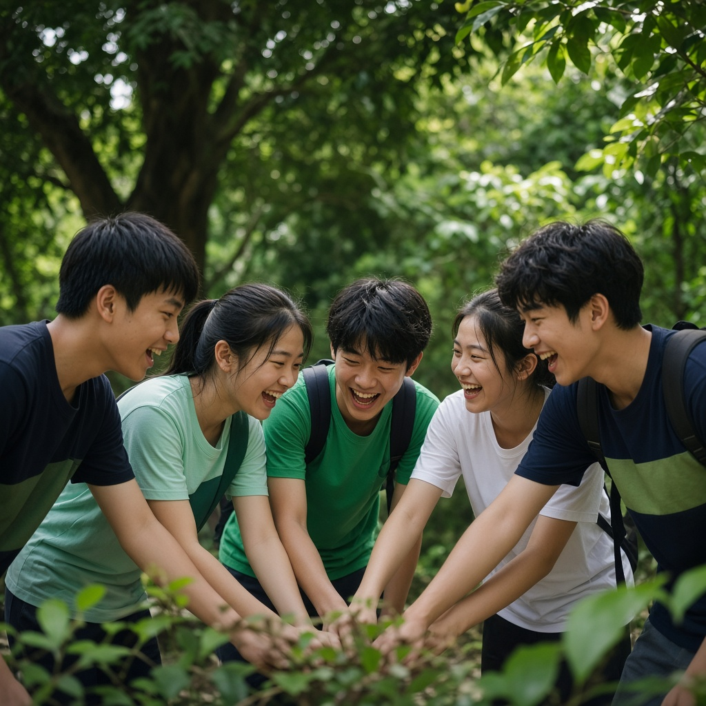

支援留守兒童、困境家庭與香港校園生命教育，把希望帶到更多角落。
我們重視人的價值與尊嚴，以愛心扶助中國內地和香港有需要的兒童、青少年和家庭，為他們提供包括身、心、社、靈上的關顧和培育。此外，我們也關心世界上受天災人禍影響的群體。
支援留守及困境兒童，開展社會關懷、助學與緊急扶貧項目，為農村家庭帶來持續希望。
推動校園生命教育、獎學金計劃與社會關懷服務，培育有品格、有視野的新一代。
透過籌款活動連結善心，為前線服務提供資源，讓愛與希望走到更遠的地方。
0
受惠人數
義工參與
學校及單位獲得支援
「施比受更為有福」
您的愛心支持可以祝福萬千生命，讓世界改變！
香港稅務扣減捐款 HK$100+ ｜ 你的捐款可即時幫助有需要的人
希望同行在全國十八個省市為留守人群及困境兒童提供服務：支援農村單位開展多元化社會關懷服務，設立過千助學名額給貧困的中學及大學生完成學業，擺脫跨代貧窮。此外，更為農村及山區小學建設多功能活動室，優化他們的教育質素。
希望同行與香港超過三十間中小學合作，推動優質生命教育、師友同行及領袖培訓；並與25間中學及3間大學攜手推行「英才培育獎學金計劃」，重點培育學生良好品格、領袖能力及國際視野。

希望同行需要有志協助弱勢社群的愛心人士，一起走到助人前線。